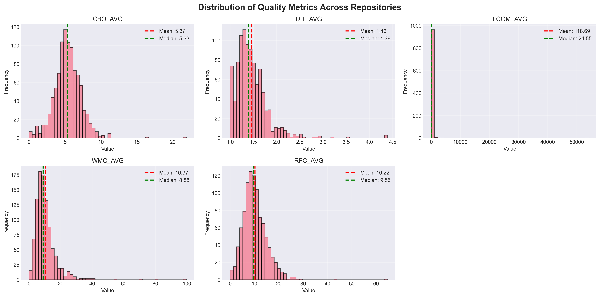
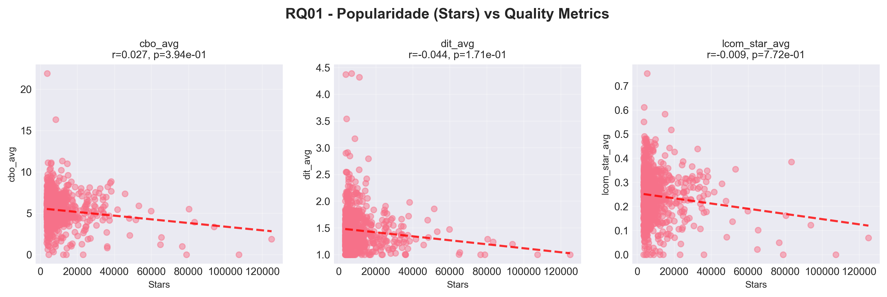
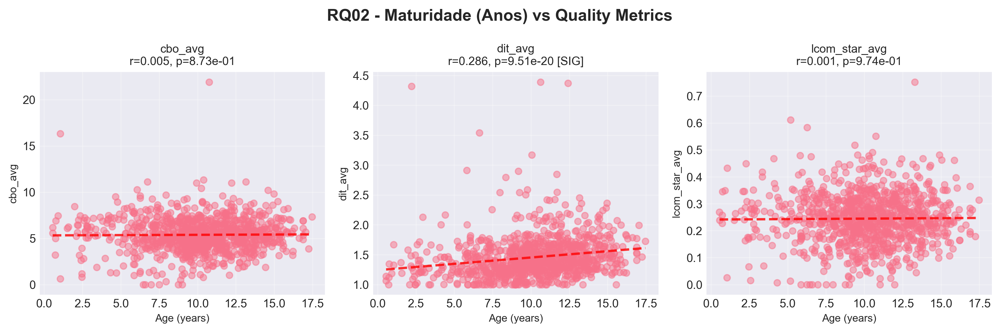
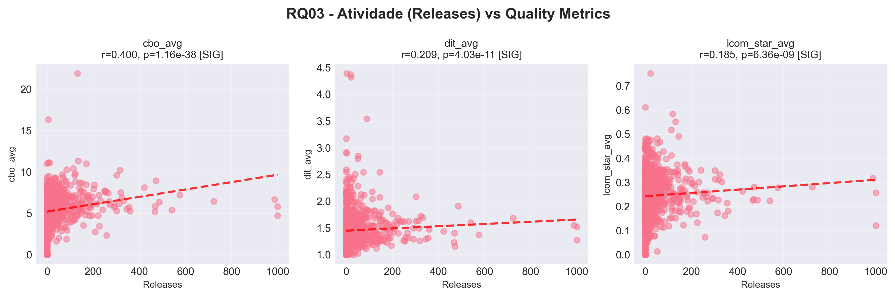
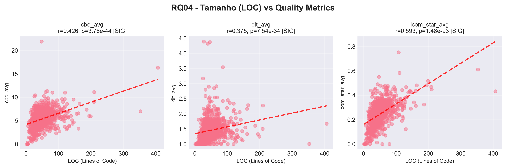
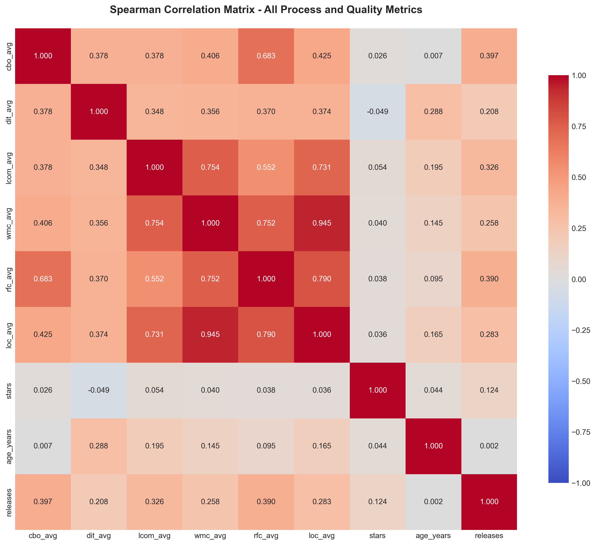

Autor: Paulo Victor Pimenta Rubinger
Data: 05 de Abril de 2026
Versão do Relatório: 3.0.1
Repositório: https://github.com/PauloRubinger/lab-02
Disciplina: Laboratório de Experimentação de Software (6º período — Engenharia de Software)
Professor: João Paulo Carneiro Aramuni
Este experimento analisou 974 repositórios Java da plataforma GitHub para investigar a correlação entre características do processo de desenvolvimento (popularidade, maturidade, atividade e tamanho) e métricas de qualidade de código: CBO (Coupling Between Objects — acoplamento entre objetos), DIT (Depth of Inheritance Tree — profundidade da árvore de herança) e LCOM (Lack of Cohesion of Methods* — falta de coesão entre métodos, versão normalizada).
Principais Resultados:
O desenvolvimento de software open-source caracteriza-se por um ambiente colaborativo onde múltiplos desenvolvedores contribuem em diferentes partes do código. Neste contexto, um dos principais riscos é a degradação dos atributos de qualidade interna do sistema, como:
Como características do processo de desenvolvimento (quantidade de contribuições, idade do projeto, popularidade) se relacionam com a qualidade interna do código? Existe correlação mensurável entre métricas de processo e produto?
| ID | Questão de Pesquisa | Variável Independente | Variável Dependente |
|---|---|---|---|
| RQ01 | Qual a relação entre a popularidade dos repositórios e suas características de qualidade? | Estrelas (stars) | CBO, DIT, LCOM* |
| RQ02 | Qual a relação entre a maturidade dos repositórios e suas características de qualidade? | Idade (anos) | CBO, DIT, LCOM* |
| RQ03 | Qual a relação entre a atividade dos repositórios e suas características de qualidade? | Releases | CBO, DIT, LCOM* |
| RQ04 | Qual a relação entre o tamanho dos repositórios e suas características de qualidade? | LOC (Lines of Code) | CBO, DIT, LCOM* |
Objetivo Principal: Investigar a correlação entre características do processo de desenvolvimento (popularidade, maturidade, atividade, tamanho) e métricas de qualidade de código (CBO, DIT, LCOM*) em repositórios Java populares.
Objetivos Específicos:
O experimento seguiu um pipeline automatizado de cinco fases, representado no fluxograma a seguir:
┌─────────────────────────────────────────┐
│ Fase 1 — Seleção │
│ GitHub GraphQL API │
│ Top-1.000 repos Java por stars │
└────────────────────┬────────────────────┘
▼
┌─────────────────────────────────────────┐
│ Fase 2 — Coleta de Metadados │
│ Stars, Releases, Data de criação, URL │
└────────────────────┬────────────────────┘
▼
┌─────────────────────────────────────────┐
│ Fase 3 — Análise Estática │
│ git clone --depth 1 │
│ CK 0.7.1-SNAPSHOT │
│ Extração de CBO, DIT, LCOM*, LOC │
│ │
│ Falha no CK (26 repos)? │
│ → Registra erro, pula para próximo │
└────────────────────┬────────────────────┘
▼
┌─────────────────────────────────────────┐
│ Fase 4 — Consolidação │
│ Agregação por repositório │
│ (média, mediana, desvio padrão) │
│ Limpeza de dados ausentes │
└────────────────────┬────────────────────┘
▼
┌─────────────────────────────────────────┐
│ Fase 5 — Análise Estatística │
│ Estatísticas descritivas │
│ Correlações de Spearman e Pearson │
│ Geração de gráficos │
└─────────────────────────────────────────┘
Descrição das Fases:
stargazerCount, releases.totalCount, createdAt e URL para clone.--depth 1) de cada repositório, execução da ferramenta CK para gerar class.csv com métricas por classe, e extração de CBO, DIT, LCOM* e LOC.| Parâmetro | Valor |
|---|---|
| Tamanho inicial | 1.000 repositórios |
| Analisados com sucesso | 974 (97,4%) |
| Excluídos | 26 (2,6%) — falha na análise CK |
| Critério de seleção | Top Java repositories por stars no GitHub |
| Período | Snapshot em 09/04/2026 |
| Inclusão | Todos os repos com pelo menos 1 arquivo Java |
| Exclusão | Repos vazios, forks privados |
| Ferramenta | Versão | Propósito |
|---|---|---|
| Python | 3.14.3 | Orquestração do pipeline e análise estatística |
| GitHub GraphQL API | v4 | Coleta de metadados dos repositórios |
| Git | 2.40.0 | Clone raso dos repositórios |
| CK | 0.7.1-SNAPSHOT | Análise estática de código Java |
| pandas | ≥2.0.0 | Manipulação e consolidação de dados |
| scipy | ≥1.10.0 | Testes estatísticos e correlações |
| matplotlib / seaborn | ≥3.7.0 / ≥0.12.0 | Geração de gráficos e visualizações |
| Métrica | Unidade | Fórmula | Interpretação |
|---|---|---|---|
| Popularidade (Stars) | Contagem | stargazerCount |
Número de estrelas do repositório |
| Maturidade (Idade) | Anos | ano_atual − ano_criação |
Quantos anos o repositório existe |
| Atividade (Releases) | Contagem | releases.totalCount |
Número de releases/versões publicadas |
| Tamanho (LOC) | Linhas | SUM(loc) / n_classes |
Média de linhas de código por classe |
| Métrica | Unidade | Range | Interpretação |
|---|---|---|---|
| CBO (Coupling Between Objects) | Contagem | 0–∞ | Quantas classes estão acopladas a esta classe. Menor = Melhor. |
| DIT (Depth Inheritance Tree) | Níveis | 0–∞ | Profundidade da árvore de herança. Menor = Melhor. |
| LCOM* (Lack of Cohesion of Methods) | Razão normalizada | 0–1 | Falta de coesão entre métodos. Menor = Melhor. |
Nota: Utilizamos a versão normalizada LCOM (0–1), mais confiável que o LCOM original. Para análise em nível de repositório, usamos média, mediana e desvio padrão* das métricas por classe.
| Situação | Tratamento |
|---|---|
| Clone falha (URL inválida / timeout) | Registra erro no log, pula para o próximo repositório |
| CK falha (código incompatível) | Registra erro no log, pula para o próximo repositório |
Métrica faltante (CK não gerou class.csv) |
Marca como incompleto, exclui da análise |
| Repositório duplicado | Deduplica antes do processamento |
Resultado: Dos 1.000 repositórios coletados, 26 (2,6%) falharam na análise CK e foram excluídos, resultando em 974 repositórios analisados.
Métricas de Processo (n = 974):
| Métrica | Média | Mediana | Desvio Padrão | Min | Max |
|---|---|---|---|---|---|
| Stars | 9.442,41 | 5.786,50 | 10.714,38 | 3.473 | 125.017 |
| Releases | 41,01 | 11,00 | 89,95 | 0 | 1.000 |
| Idade (anos) | 10,14 | 10,31 | 3,18 | 0,56 | 17,47 |
| LOC_avg | 50,93 | 44,23 | 31,45 | 2,00 | 406,33 |
Métricas de Qualidade (n = 974):
| Métrica | Média | Mediana | Desvio Padrão | Min | Max |
|---|---|---|---|---|---|
| CBO_avg | 5,38 | 5,33 | 1,87 | 0,00 | 21,89 |
| DIT_avg | 1,46 | 1,39 | 0,35 | 1,00 | 4,39 |
| LCOM*_avg | 0,24 | 0,25 | 0,09 | 0,00 | 0,75 |
As métricas de processo apresentam alta variabilidade: a mediana de stars (5.787) é bem inferior à média (9.442), indicando distribuição fortemente assimétrica com poucos repositórios concentrando muitas estrelas. O mesmo se observa em releases, cuja mediana (11) é quatro vezes menor que a média (41). Já as métricas de qualidade possuem menor variabilidade relativa, com médias e medianas próximas — em especial LCOM* (média 0,24 vs. mediana 0,25), sugerindo distribuição simétrica.
A Figura 1 apresenta os histogramas de distribuição das três métricas de qualidade analisadas, com linhas indicando média (vermelha) e mediana (verde) de cada distribuição.

Descrição: O gráfico apresenta três histogramas lado a lado, cada um mostrando a distribuição de uma métrica de qualidade nos 974 repositórios. CBO_avg (esquerda) exibe distribuição assimétrica à direita; DIT_avg (centro) está fortemente concentrado próximo a 1; LCOM*_avg (direita) distribui-se de forma mais uniforme entre 0 e 0,5.
Insights:
Pergunta: Qual a relação entre a popularidade dos repositórios (stars) e suas métricas de qualidade?
| Correlação | Spearman ρ | p-valor | Significância |
|---|---|---|---|
| Stars vs CBO_avg | 0,0273 | 0,394 | Não significativo |
| Stars vs DIT_avg | −0,0439 | 0,171 | Não significativo |
| Stars vs LCOM*_avg | −0,0093 | 0,772 | Não significativo |
Hipótese H1: Repositórios mais populares devem ter melhor qualidade (menor CBO, DIT, LCOM*).
Resultado: H1 rejeitada. Não foram encontradas correlações estatisticamente significativas entre popularidade (stars) e nenhuma das métricas de qualidade (p > 0,05 em todos os casos).
A Figura 2 apresenta gráficos de Stars vs. as três métricas de qualidade, com linha de tendência e valores de correlação de Spearman.

Descrição: Os três gráficos mostram a distribuição de 974 repositórios no espaço Stars × métrica de qualidade. A grande concentração de pontos à esquerda (repositórios com menos de 20.000 stars) e as linhas de tendência praticamente horizontais evidenciam a ausência de relação.
Insights:
Pergunta: Qual a relação entre a maturidade (idade em anos) dos repositórios e suas métricas de qualidade?
| Correlação | Spearman ρ | p-valor | Significância |
|---|---|---|---|
| Idade vs CBO_avg | 0,0051 | 0,873 | Não significativo |
| Idade vs DIT_avg | 0,2857 | 9,56e-20 | Significativo (p < 0,001) |
| Idade vs LCOM*_avg | 0,0010 | 0,975 | Não significativo |
Hipótese H2: Repositórios mais maduros devem ter melhor qualidade (refatoração ao longo do tempo).
Resultado: H2 parcialmente rejeitada. A maturidade não mostrou correlação significativa com CBO (acoplamento) nem com LCOM* (coesão). Porém, repositórios mais antigos apresentam maior DIT (ρ = 0,29, p < 0,001), sugerindo acúmulo de herança ao longo do tempo.
A Figura 3 apresenta gráficos de Idade (anos) vs. as três métricas de qualidade.

Descrição: Os gráficos mostram a relação entre a idade do repositório (eixo x, em anos) e cada métrica de qualidade. No painel central (DIT_avg), a linha de tendência ascendente e a marcação "[SIG]" no subtítulo do gráfico indicam a única correlação significativa desta RQ.
Insights:
Pergunta: Qual a relação entre a atividade (releases) dos repositórios e suas métricas de qualidade?
| Correlação | Spearman ρ | p-valor | Significância |
|---|---|---|---|
| Releases vs CBO_avg | 0,3997 | 1,16e-38 | Significativo (p < 0,001) |
| Releases vs DIT_avg | 0,2095 | 4,03e-11 | Significativo (p < 0,001) |
| Releases vs LCOM*_avg | 0,1847 | 6,36e-09 | Significativo (p < 0,001) |
Hipótese H3: Repositórios com mais releases devem ter melhor qualidade (maior atividade = melhor manutenção).
Resultado: H3 rejeitada. Contrariando a hipótese, todas as correlações são positivas e altamente significativas, indicando que projetos com mais releases apresentam pior qualidade interna.
A Figura 4 apresenta gráficos de Releases vs. as três métricas de qualidade.

Descrição: Os três gráficos mostram correlações positivas entre o número de releases e cada métrica de qualidade. Os dados estão concentrados à esquerda (maioria dos repositórios tem poucas releases), mas as linhas de tendência ascendentes e as marcações "[SIG]" no subtítulo do gráfico em todos os painéis indicam relações estatisticamente significativas.
Insights:
Pergunta: Qual a relação entre o tamanho (LOC médio por classe) dos repositórios e suas métricas de qualidade?
| Correlação | Spearman ρ | p-valor | Significância |
|---|---|---|---|
| LOC_avg vs CBO_avg | 0,4257 | 3,76e-44 | Significativo (p < 0,001) |
| LOC_avg vs DIT_avg | 0,3748 | 7,54e-34 | Significativo (p < 0,001) |
| LOC_avg vs LCOM*_avg | 0,5930 | 1,48e-93 | Significativo (p < 0,001) |
Hipótese H4: Repositórios maiores terão pior qualidade (maior LOC correlaciona com maior complexidade).
Resultado: H4 confirmada. Todas as correlações são positivas e altamente significativas. A correlação mais forte é entre LOC e LCOM* (ρ = 0,59 — moderada a forte), seguida de LOC e CBO (ρ = 0,43 — moderada) e LOC e DIT (ρ = 0,37 — moderada).
A Figura 5 apresenta gráficos de LOC_avg vs. as três métricas de qualidade.

Descrição: Os gráficos revelam tendências ascendentes claras em todos os três painéis. O painel direito (LCOM*_avg) apresenta a tendência mais acentuada, com pontos distribuídos ao longo de uma faixa diagonal bem definida. As marcações "[SIG]" confirmam significância em todos os casos.
Insights:
A Figura 6 apresenta a matriz de correlação de Spearman entre todas as métricas analisadas, resumindo visualmente as relações encontradas.

Descrição: O heatmap mostra os coeficientes de correlação de Spearman entre todas as combinações de métricas. Cada célula é colorida de acordo com o valor da correlação (escala de cores), e o valor numérico é exibido no centro.
Insights:
| Hipótese | Expectativa | Resultado | Veredito |
|---|---|---|---|
| H1 (Popularidade → Qualidade) | Mais stars = melhor qualidade | Nenhuma correlação significativa | Rejeitada |
| H2 (Maturidade → Qualidade) | Mais antigo = melhor qualidade | Apenas DIT aumenta com idade | Parcialmente rejeitada |
| H3 (Atividade → Qualidade) | Mais releases = melhor qualidade | Mais releases = pior qualidade | Rejeitada |
| H4 (Tamanho → Qualidade) | Maior LOC = pior qualidade | Todas as métricas pioram com LOC | Confirmada |
Popularidade não indica qualidade (RQ01). O número de estrelas reflete interesse da comunidade, utilidade percebida ou marketing do projeto — não a qualidade interna do código. Um desenvolvedor que busca bibliotecas de alta qualidade não deveria se basear unicamente na contagem de stars.
Maturidade tem efeito limitado (RQ02). A única correlação significativa foi entre idade e DIT (ρ = 0,29). Projetos mais antigos acumulam hierarquias de herança mais profundas ao longo do tempo, possivelmente por extensões incrementais via subclasses. A ausência de correlação com CBO e LCOM* sugere que acoplamento e coesão são mais influenciados por decisões de design do que pelo tempo de existência do projeto.
Atividade correlaciona com complexidade, não com qualidade (RQ03). Projetos com mais releases tendem a ser maiores e mais complexos, o que explica as correlações positivas com CBO (ρ = 0,40), DIT (ρ = 0,21) e LCOM* (ρ = 0,18). A hipótese de que mais releases implicaria melhor manutenção não se confirmou — provavelmente porque projetos ativos crescem em escopo, aumentando a complexidade estrutural.
Tamanho é o melhor preditor de qualidade (RQ04). LOC apresentou as correlações mais fortes e consistentes: LCOM* (ρ = 0,59), CBO (ρ = 0,43) e DIT (ρ = 0,37). Classes maiores tendem a acumular mais responsabilidades (baixa coesão), mais dependências (alto acoplamento) e hierarquias mais profundas. Este resultado reforça o princípio do Single Responsibility e a importância de manter classes pequenas.
Este estudo analisou 974 dos 1.000 repositórios Java mais populares do GitHub, investigando a relação entre métricas de processo (popularidade, maturidade, atividade e tamanho) e métricas de qualidade de código (CBO, DIT, LCOM*).
Achados Principais:
Conclusão geral: O tamanho das classes é o fator dominante na qualidade do código Java. Projetos devem priorizar classes menores e mais coesas para manter bons indicadores de qualidade interna, independentemente da popularidade ou idade do repositório.
Recomendações para pesquisa futura:
# 1. Clone o repositório
git clone https://github.com/PauloRubinger/lab-02.git
cd lab-02
# 2. Crie ambiente virtual e instale dependências
python -m venv .venv
.venv\Scripts\Activate.ps1 # Windows
source .venv/bin/activate # Linux/Mac
pip install -r requirements.txt
# 3. Execute o pipeline de coleta e análise estática
python src/main.py
# 4. Gere análise estatística e gráficos
python src/analysis/correlations.py
| Artefato | Localização |
|---|---|
| Repositório | https://github.com/PauloRubinger/lab-02 |
| Dados brutos (metadados) | data/raw/repositories.csv |
| Dados processados (métricas) | data/processed/consolidated_metrics.csv |
| Estatísticas descritivas | reports/descriptive_stats.json |
| Correlações detalhadas | reports/correlations_detailed.json |
| Código-fonte | src/ |
| Logs de execução | logs/processing_*.json |
CK — Code Metrics: Aniche, M. CK: A tool to compute class-level code metrics for Java projects. Disponível em: https://github.com/mauricioaniche/ck
GitHub GraphQL API v4. Disponível em: https://docs.github.com/en/graphql
# GitHub GraphQL Query
query: "language:Java sort:stars"
max_results: 1000
fetch_per_page: 10
# Git Clone
depth: 1 # Shallow clone para economizar armazenamento em disco
timeout: 600s por repositório
# Processamento
batch_size: 1 repo por vez # Para economizar armazenamento em disco
Resumo da execução:
| Etapa | Resultado |
|---|---|
| Total de repositórios tentados | 1.000 |
| Clone bem-sucedido | 1.000 (100%) |
| Análise CK bem-sucedida | 974 (97,4%) |
| Análise CK falhou | 26 (2,6%) |
Matriz de falhas:
| Tipo de Falha | Contagem | Repositórios Afetados |
|---|---|---|
| CK NullPointerException | 12 | elastic_elasticsearch, NationalSecurityAgency_ghidra, dbeaver_dbeaver, oracle_graal, thingsboard_thingsboard, questdb_questdb, Grasscutters_Grasscutter, neo4j_neo4j, projectlombok_lombok, trinodb_trino, haifengl_smile, JabRef_jabref |
| CK IOException | 3 | JetBrains_intellij-community, checkstyle_checkstyle, dragonwell-project_dragonwell8 |
| CK Runtime Warning/Error | 1 | openjdk_jdk |
| CK ArrayIndexOutOfBoundsException | 1 | google_j2objc |
| Metrics Extraction Empty | 9 | Snailclimb_JavaGuide, hollischuang_toBeTopJavaer, frank-lam_fullstack-tutorial, react-native-camera_react-native-camera, CoderLeixiaoshuai_java-eight-part, Archmage83_tvapk, RedSpider1_concurrent, jlegewie_zotfile, NotFound9_interviewGuide |
| Componente | Versão |
|---|---|
| Sistema Operacional | Windows 11 / macOS |
| Python | 3.14.3 |
| Java | 21.0.3 |
| Git | 2.40.0 |
| CK | 0.7.1-SNAPSHOT |
Dependências Python:
certifi==2026.2.25
charset-normalizer==3.4.6
idna==3.11
python-dotenv==1.2.2
requests==2.33.0
urllib3==2.6.3
pandas>=2.0.0
numpy>=1.24.0
scipy>=1.10.0
matplotlib>=3.7.0
seaborn>=0.12.0
Versão: 3.0.1 | Data: 10/09/2026 | Status: Revisado